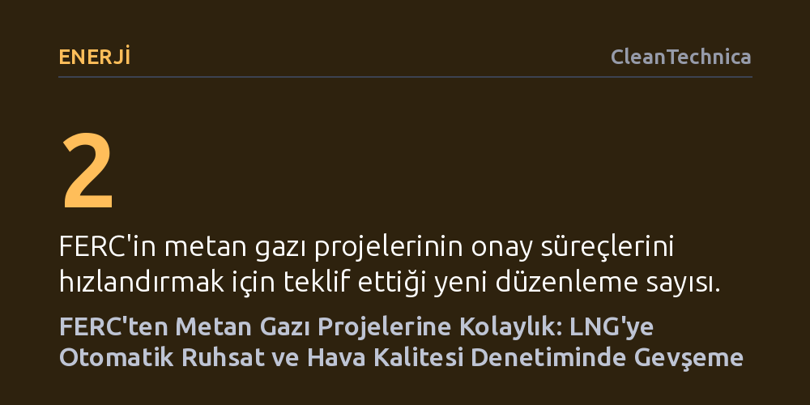

ENERJI · CleanTechnica · 2026-10-16
ABD Federal Enerji Düzenleme Komisyonu (FERC), belirli LNG tesislerine kapsamlı çevre incelemesi olmaksızın otomatik onay verilmesini ve hava kalitesi modellemesi zorunluluğunun kaldırılmasını önerdi. Bu adımlar, fosil gaz projelerinin onay süreçlerini denetimsiz biçimde hızlandırmayı hedefliyor.
Fosil yakıt altyapısının yaygınlaşmasında kritik bir bariyer olan bağımsız çevre ve hava kalitesi denetimlerinin, idari kararlarla nasıl devre dışı bırakılabileceğini gösteriyor.

ABD Federal Enerji Düzenleme Komisyonu (FERC), aylık toplantısında metan gazı projelerinin onay süreçlerini kökten değiştirecek iki yeni düzenleme teklifini kamuoyuna sundu. Komisyonun gündeme getirdiği bu adımlar, sıvılaştırılmış doğal gaz (LNG) ve diğer fosil gaz altyapılarının bürokratik engellere takılmadan çok daha hızlı ruhsatlandırılmasını amaçlıyor.
Ancak bu hızlandırma hamlesi, projelerin kamu sağlığı ve çevre üzerindeki etkilerini tespit eden yerleşik denetim mekanizmalarının devre dışı bırakılması anlamına geliyor. Düzenleme, enerji sektörünün uzun süredir talep ettiği kolaylaştırılmış onay süreçlerini hayata geçirirken, bağımsız gözetim mekanizmalarını ciddi biçimde zayıflatma riski taşıyor.
Teklif edilen ilk mekanizma, belirli asgari kriterleri karşılayan LNG tesisleri için genel yetkilendirme (blanket certificate) programı başlatılmasını öngörüyor. Bu uygulama yürürlüğe girerse, kriterlere uyan tesisler kapsamlı bir çevresel etki değerlendirmesinden geçmeksizin otomatik ya da hızlandırılmış ruhsat alabilecek.
İkinci ve belki de daha kritik düzenleme ise hava kalitesi analizlerini hedef alıyor. FERC'in taslak politika bildirimi uyarınca, metan gazı proje geliştiricilerinin artık atmosferik dağılım modellemesi sunması gerekmeyecek. Oysa bu modelleme, tesislerin yerel ve bölgesel düzeyde havaya salacağı kirleticileri önceden tespit etmek için temel bir araç olarak kabul ediliyordu.
Hava dağılım modellemesinin kaldırılması, ABD Ulusal Çevre Politikası Yasası'nın (NEPA) gerektirdiği şeffaf ve kapsamlı değerlendirme ilkeleriyle doğrudan çelişiyor. NEPA, federal kurumların büyük altyapı yatırımlarının hava ve çevre kalitesine olası zararlarını kamuoyuyla paylaşmasını şart koşarken, yeni teklif bu koruma kalkanını zayıflatıyor.
Bu taslak kararlar, fosil yakıt tesislerinin yakınında yaşayan toplulukların karşı karşıya olduğu sağlık risklerinin göz ardı edilmesi sonucunu doğurabilir. Çevre denetimlerinden muaf tutulan veya hızlandırılmış süreçlerle inşa edilen tesislerin kümülatif etkileri hesaplanamadığı için, enerji arzı gerekçesiyle yerel halkın temiz hava hakkının ikinci plana itilmesi tehlikesi beliriyor.